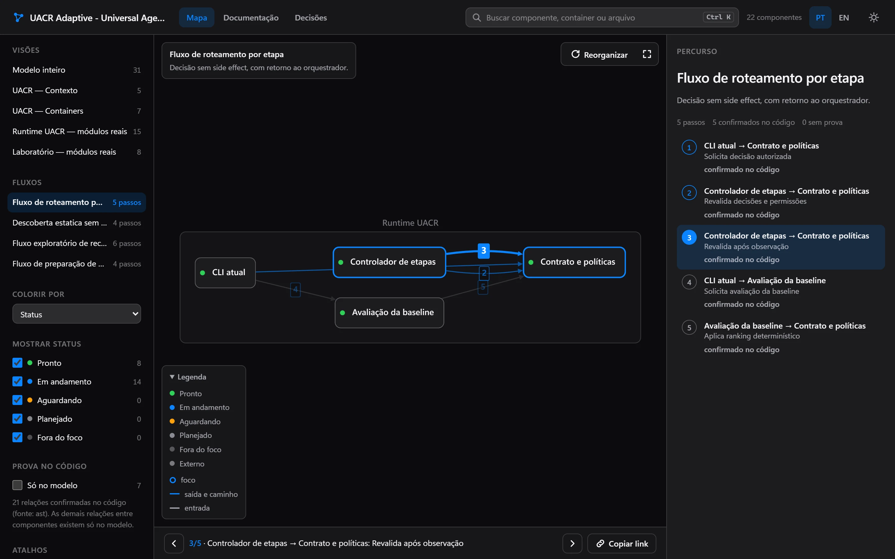
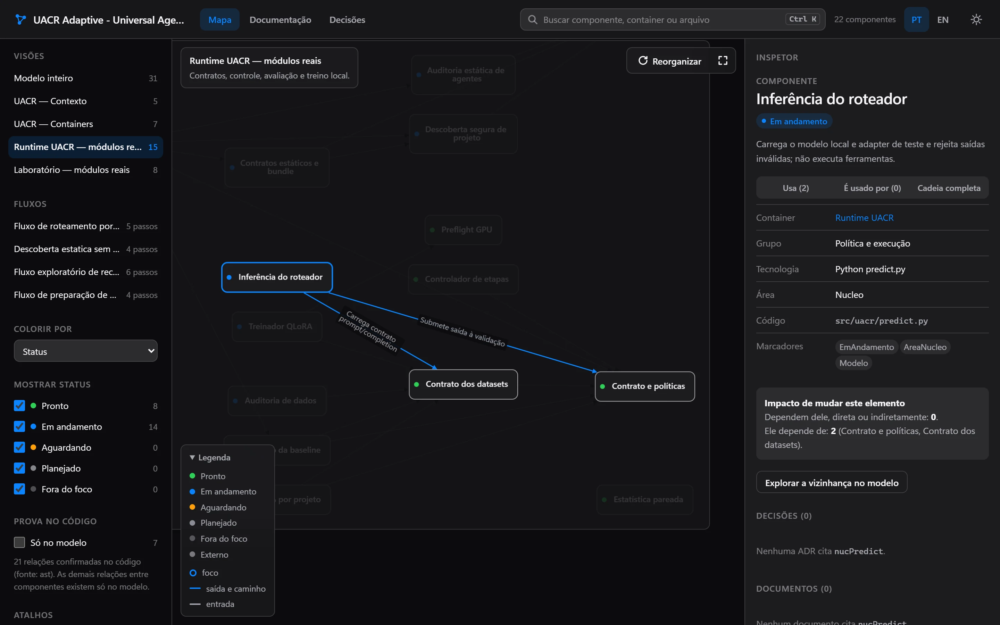
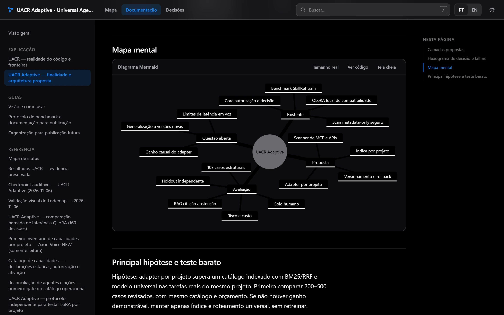
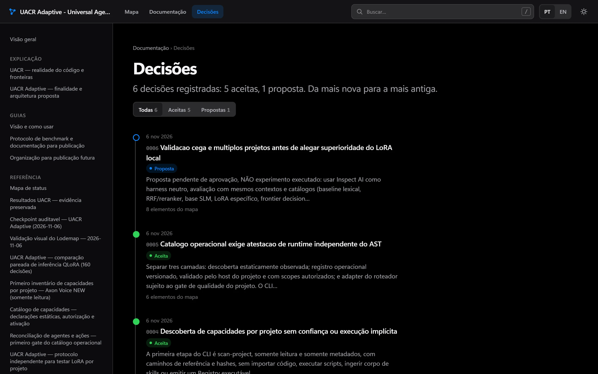

Lodemap
Esta páginaO mapa e a documentação do projeto. Funciona sozinho, sem servidor. CodeGraph (relações com 0 tokens) e Synapse (lições do projeto) são integrações opcionais.
Agentes leem o repositório e montam um mapa C4 com fluxos animados, um leitor de documentação e um teste que falha quando um módulo fica de fora. Depois disso, cada commit atualiza tudo só com scripts, sem chamar modelo.

01O problema
Times herdam sistemas que ninguém consegue explicar inteiro. Reescrever a documentação custa semanas, e ela envelhece logo depois. Pedir a um modelo para "documentar tudo" sai caro e não garante que o texto bate com o código.
Desenhados à mão uma vez, nunca mais conferidos.
Quem chega precisa descobrir sozinho por onde o pedido passa.
Métricas e benchmarks citados sem arquivo nem commit.
O porquê de cada escolha fica em conversas que ninguém acha depois.
02O que ele gera
O modelo de arquitetura mora no seu repositório, em Structurizr DSL (padrão C4), e é revisado em pull request como qualquer código. Todo o resto é gerado a partir dele e roda local, sem servidor.
Sistema, containers, componentes por área, relações nomeadas, visões e fluxos dinâmicos. Cada componente tem status: pronto, em andamento, aguardando, planejado ou fora do foco.
# model/componentes-api.dsl (exemplo) group "Roteamento" { roteador = component "Roteador" "Escolhe o agente" { properties { "status" "Em andamento" "codigo" "app/roteador.py" } } } roteador -> fila "Publica a tarefa"workspace.dsl · model/ · views/
Navega pelas visões, toca os fluxos passo a passo com link para cada passo, filtra por status e mostra o que mudou desde o último commit. Relação sem prova no código aparece marcada.
explorador/index.htmlDocs e decisões (ADRs) com busca, sumário, linha do tempo das decisões e diagramas Mermaid desenhados offline. Cada elemento citado leva ao mesmo ponto no mapa.
leitor/index.htmlUm pytest que falha quando algum módulo do código fica fora do modelo. O mapa não envelhece em silêncio: o CI avisa.
tests/test_arquitetura_cobertura.pyCada número ligado a um componente aponta o arquivo e o commit de onde saiu. Um teste confere se a fonte ainda existe.
metricas/metricas.jsonDocumentos em Markdown, Structurizr Lite e site estático. Liga só o que quiser.
-ComLite · -ComSite


03Como funciona
Cada degrau só entra quando o anterior não resolve. O custo sobe quando a estrutura muda, não a cada commit.
Lista os módulos, sugere relações pelo grafo de código (CodeGraph ou AST) e regenera mapa, leitor e documentos. Sem mudança estrutural, o trabalho para aqui.
Só para o que os scripts não souberam classificar. Somente leitura.
O único papel que decide: corta componentes, nomeia relações e desenha fluxos. Passa por um gate de qualidade objetivo.
Liga métricas às fontes, roda o pipeline e confere cobertura, links e scripts. Corrige a partir de achados já escritos.
Um script monta o rascunho (um componente por módulo e as relações achadas no código) sem gastar token. O modelador só preenche as decisões num JSON, e outro script escreve o DSL. Cada fase roda com um agente novo, então o contexto não acumula. Ao rodar de novo, só o que mudou no código volta para decisão.
workspace.json e a nota de qualidade.inventáriomodeladorgate de qualidademétricas ∥ geradorverificador
| Agente | Modelo | Esforço | Faz |
|---|---|---|---|
lodemap-inventario | haiku | low | Lista módulos, pontos de entrada e dependências; não edita |
lodemap-modelador | sonnet | high | Containers, componentes, relações, visões, fluxos e status |
lodemap-metricas | sonnet | low | Extrai números de evidências com arquivo e commit conferidos |
lodemap-gerador | sonnet | medium | Templates, lodemap.json e o pipeline de atualização |
lodemap-verificador | haiku | medium | Cobertura, links internos, node --check e navegador headless; não edita |
lodemap-revisor-visual | sonnet | high | Só quando você pede mudança visual; compara capturas antes e depois |
Nenhum agente da skill usa Opus. No modo "atualizar a cada merge" só rodam scripts; o modelador entra se a cobertura falhar ou se aparecer um módulo sem componente.
04Provas
Cada número tem arquivo de evidência e data. Os registros brutos estão em references/benchmark-e-custo.md
e references/custo-equivalente.json, no repositório da skill.
atualizar.ps1 com o site estático, 0 tokens · 02/11/2026Auditoria de segurança de 05/11/2026: 0 achados críticos; 3 altos (2 corrigidos com teste, 1 documentado no README), 9 médios e 9 baixos. No 3º repositório (UACR), o gate deu 92,9. A primeira auditoria de precisão (08/11, semente 7, mapa anterior) achou 8 de 10 relações existentes e 7 de 10 descrições corretas, nenhuma errada. Amostras pequenas: leia os intervalos, não só a fração.
05Wikis geradas × Lodemap
Ferramentas como a DeepWiki e a Google Code Wiki geram e hospedam a documentação por você, com chat sobre o código. É um bom produto. O Lodemap aposta em outra coisa: um modelo de arquitetura versionado, conferido por teste e barato de manter.
| Wikis geradas e hospedadas | Lodemap | |
|---|---|---|
| Onde fica | Na plataforma do fornecedor | No seu git, em Structurizr DSL (padrão C4), revisável em pull request |
| Atualização | A Code Wiki regenera a documentação depois de cada mudança [1] | Scripts sem tokens a cada commit; o modelo só entra quando a estrutura muda |
| Cobertura | Em repositórios grandes a DeepWiki pode deixar pastas de fora; dá para listar até 30 páginas (80 no Enterprise) no .devin/wiki.json [2] | Um teste falha se algum módulo ficar fora do mapa (63 de 63 na prova) |
| Custo | DeepWiki: nível baixo gratuito; médio de 5 a 10 ACUs e alto de 20 a 40 ACUs por wiki [2] | US$ 2,84 por mapa em custo equivalente da API (medido uma vez, 08/11/2026); atualização sem mudança de estrutura não chama modelo |
| Repositório privado | A Code Wiki anunciou uma extensão do Gemini CLI, com lista de espera em 13/11/2025 [1] | Os scripts rodam na sua máquina; os passos com modelo enviam à Anthropic o código que leem, pelo Claude Code que você já usa |
| O que eles fazem e nós não | Chat sobre o código e zero instalação | Sem chat próprio: quem pergunta é o seu agente, usando o mapa |
Fontes consultadas em 05/11/2026; o que se diz de outros produtos vale até onde deu para conferir naquele dia. [1] Google Developers Blog, "Introducing Code Wiki". [2] Documentação da Devin, "DeepWiki repository wikis".
06Custo
Documentação só continua viva se atualizar for de graça. O trabalho repetitivo fica com scripts, e o modelo entra só quando a estrutura muda.
US$ 22,37→US$ 3,61→US$ 2,84
Diff, regeneração do mapa, do leitor e dos documentos, verificação e teste de cobertura. Só scripts, de 11 a 17 segundos.
Mesmo repositório e commit. A rodada de US$ 3,61 incluiu 6 correções da própria skill, então não é um teste controlado.
De 17,6 milhões para 3,9 milhões de tokens, porque nenhuma fase arrasta o contexto das anteriores.
Antes eram 87 de 93. Abaixo desse limite, o Haiku fica na faixa barata de preço.
O preço de começar cada fase do zero. É 53% do custo; a saída é 34% e a leitura, 13%.
Os tokens vêm do registro dos agentes, deduplicado por mensagem, multiplicados pelo preço oficial da API (platform.claude.com/docs/en/about-claude/pricing, conferido em 08/11/2026). Sonnet 5.5: US$ 2 por milhão de entrada, US$ 10 de saída, US$ 0,10 de leitura de cache e US$ 4 de escrita de cache de 1 hora, que foi a usada nessas rodadas. Haiku 5.5 até 100 mil tokens de prompt: US$ 0,10 de entrada e US$ 0,50 de saída, cinco vezes mais acima disso.
As rodadas foram feitas pela assinatura do Claude Code, então o valor é o custo equivalente pela API, não uma fatura.
Ficam de fora o orquestrador que despachou os agentes e a auditoria (US$ 0,56). A qualidade do Haiku como modelador não
foi medida. Tokens, preços e o que cada rodada deixa de fora ficam em references/custo-equivalente.json; é desse
arquivo que o comando plano tira a estimativa que mostra antes de você autorizar.
07Instalar
Requer Python 3.11+ e git. O instalador mostra cada mudança, guarda cópia de tudo que toca e desfaz byte a byte.
# o repositório público abre no lançamento $ git clone https://github.com/skarL007/lodemap && cd lodemap $ python -m lodemap instalar --perfil padrao # simulação: só mostra $ python -m lodemap instalar --perfil padrao --aplicar # aplica, com backup e manifesto
$ python -m lodemap plano --repo . # 0 tokens: módulos, custo, tempo, arquivos $ python -m lodemap consentir --repo . --escopos gerar,modelo --orcamento-mensal 5 $ python -m lodemap reverter # desfaz a última instalação
08Limites conhecidos
atualizar.py roda em qualquer sistema e acha structurizr.sh e dot pelo PATH, mas só o Windows foi executado de ponta a ponta; Linux e macOS passaram em testes que simulam a plataforma. O gancho do git e o ver-arquitetura.ps1 ainda pedem PowerShell.mindmap, architecture e fórmulas usam a versão completa do Mermaid, carregada só na página que tem um desses. Apague o arquivo para economizar espaço; o bloco mostra um aviso e mantém o texto.09Estado do projeto
Itens do lançamento concluídos
O mapa e a documentação do projeto. Funciona sozinho, sem servidor. CodeGraph (relações com 0 tokens) e Synapse (lições do projeto) são integrações opcionais.
Memória de projeto para agentes, em Rust, com firewall antes da execução, agentes padrão e telemetria honesta. Ver no portfólio.
O repositório abre em breve. Até lá, fale comigo para ver uma demonstração ao vivo ou testar no seu código.